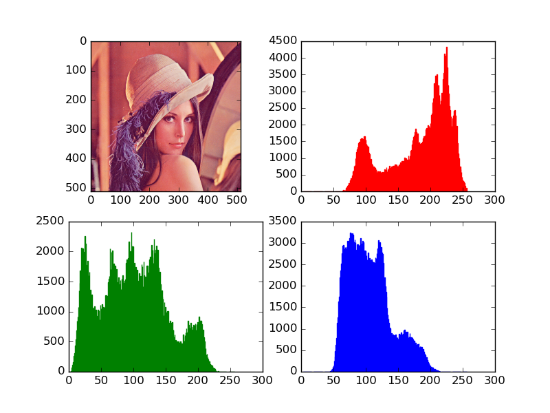
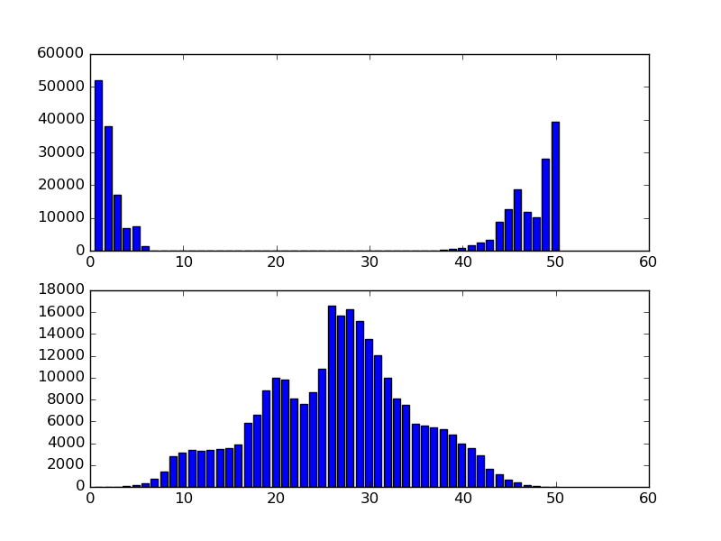

颜色直方图实验
学习颜色空间和颜色直方图12，使用OpenCV + Python 3进行一些小实验。
实验介绍
对图片进行颜色空间的转换
画出图片的颜色直方图
对两张图片的颜色直方图进行比较
实验环境
操作系统：Ubuntu 14.04.3 LTS
（刚开始用Windows 10，然后发现用Python的PIL读取jpg文件时得到的RGB编码与Ubuntu下不同，而bmp文件却是一致的。经测试在Ubuntu下用Python得到jpg文件的RGB编码与mspaint一致，故改用Ubuntu。）
开发环境：Python 2.7.6 + OpenCV 2.4.11
（OpenCV 3.x与OpenCV 2.x略有不同。）
Python Library:
numpy 1.10.2
matplotlib 1.5.0
Pillow 3.1.1
实验过程
查看不同颜色空间的编码
输入：图片文件路径、颜色空间
输出：编码
读入图片（OpenCV中默认颜色空间为BGR）
转换颜色空间
输出每个通道的编码
1 | import cv2 |
画出颜色直方图
输入：图片文件路径、颜色空间
输出：颜色直方图
读入图片 4
转换颜色空间
获得颜色直方图（可量化，注意HSV的H通道的大小是180）
绘制颜色直方图
1 | import cv2 |


比较颜色直方图
输入：两张图片文件路径、颜色空间、比较方法
输出：比较结果（一个实数值）
读入图片
转换颜色空间
获得颜色直方图并归一化
比较颜色直方图
1 | import cv2 |